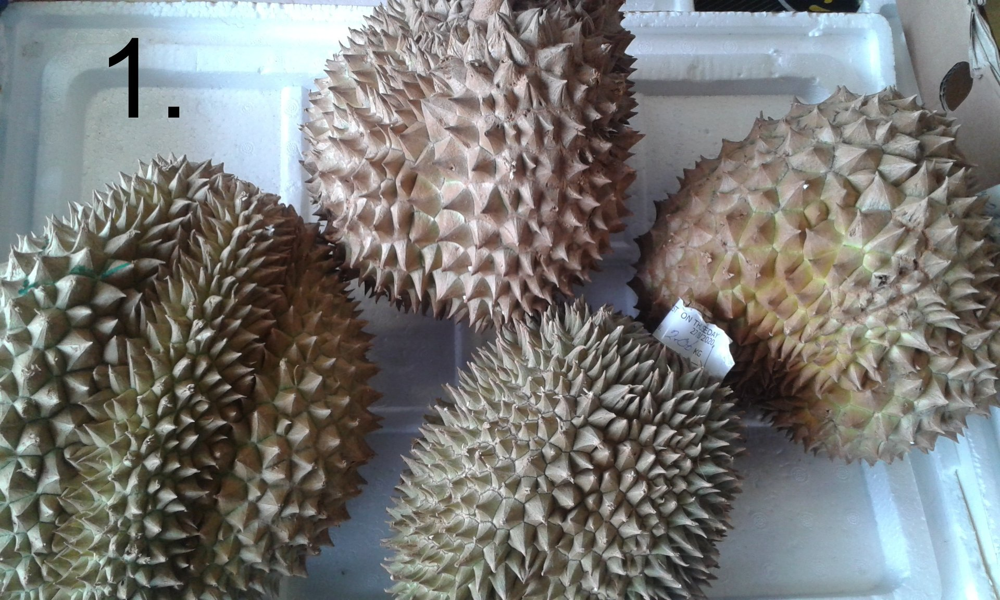
1.DURIAN
Toto proklínané a blahořečené ovoce bych dal Sapě do erbu, protože podobně to má mnoho neznalých k této tržnici. Fandové opěvují jeho ovocnou chuť a originalitu. Kritici charakteristický zápach žumpy, použitých ponožek, či tlející cibule. Jedná se o poměrně drahé ovoce, které má žlutou dužninu. Zkusil jsem a vcelku mi to chutnalo.Pokud by se měla objevit nějaká další gastro asijskočeská fuze, viděl bych ji v ovocných knedlících plněných durianem. STOP! Vzdávám se autorských práv na tento nápad, ale pokud to zrealizujete, budete mě zdarma krmit těmito knedlíky. 🙂 Jinak je pravdou, že mnoho leteckých společností vás s durianem nepustí na palubu letadla a má svou vlastní zákazovou ikonku vedle tekutin a zbraní.
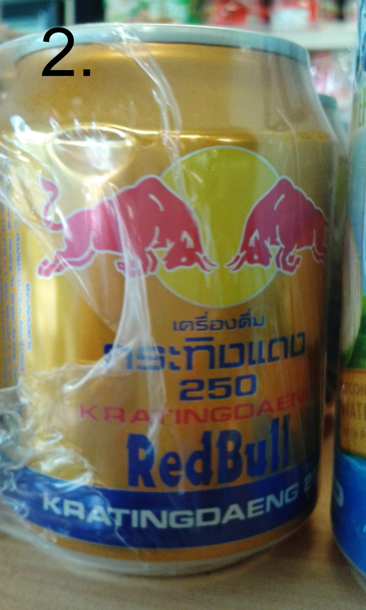
2.RED BULL VIETNAM
Je to energetický nápoj, nesycený, hodně sladký. Převážně určený pro asijský trh. Já osobně bych to musel ředit.
(obchod TAMDA)
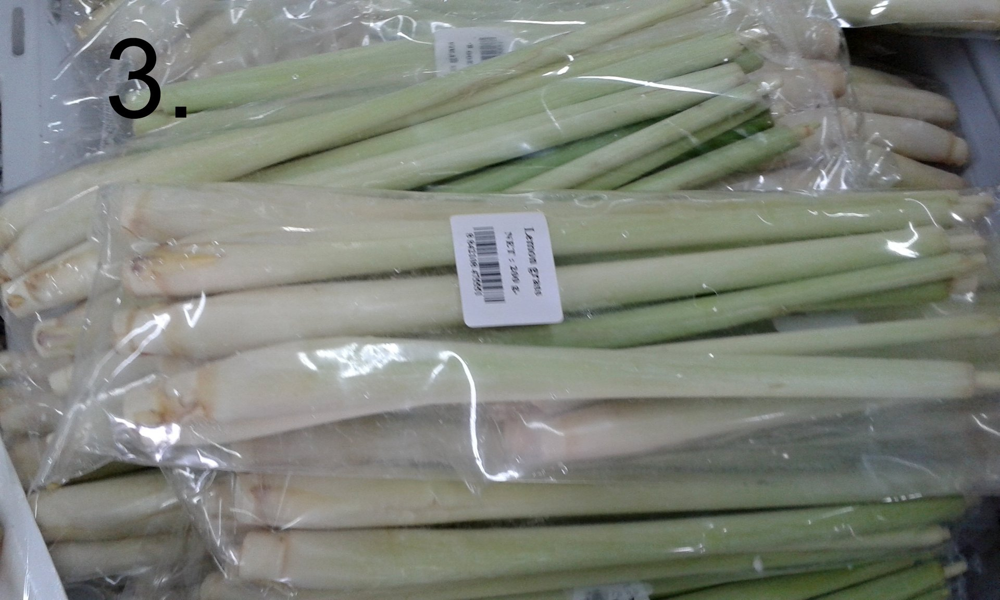
3.CITRÓNOVÁ TRÁVA
Nám s příchodem kovidu výrazně podražila a to až o 100%.Dnes dáte za balíček cca 80,- Kč. Tak proč ji kupovat? Je vynikající do horkého čaje, k prokládání grilovaného masa, jemně nasekaná v thajských kokosových polévkách, stejně za studena macerovaná v nápoji do fitka. Především ženy by si měly přečíst článek o výzkumu izraelských a indických vědců. Látky obsažené v rostlině aktivně reagují na karcinom děložního hrdla.
(obchod BAN CA TUOI SONG)
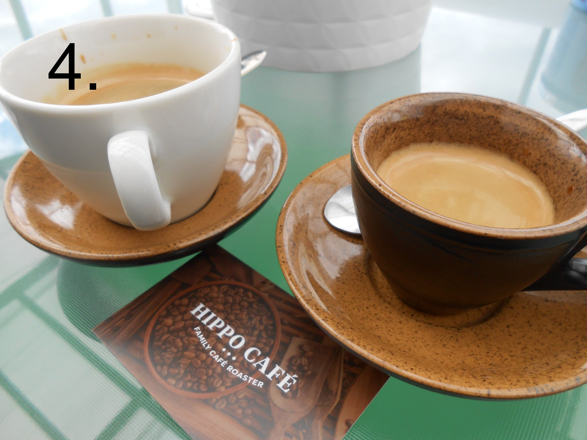
4. ESPRESSO
Na výběr z několika druhů a variant. Arabica nebo Robusta v mleté či zrnkové formě. Káva pochází z celosvětově známé kávové provincie Cau Dat - Da Lat ve Vietnamu. Hutná káva bez výrazné acidity. Můj momentální favorit, chystám se ji prověřit nejen jako ledovku (s vietnamskou Robustou mám v tomto směru lepší ohlasy, než Arabicou), ale taky z ní vyzkouším udělat Cold Brew.
(kavárna HIPPO CAFÉ )
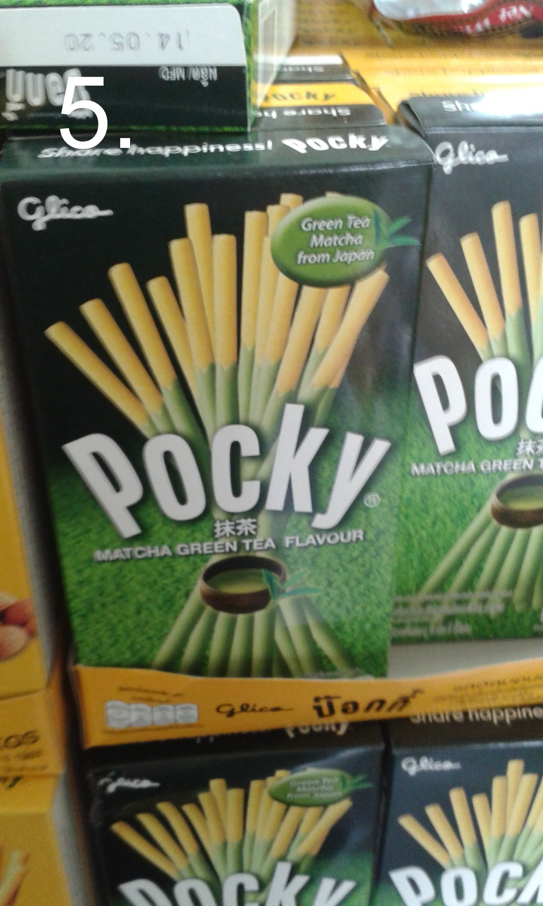
5.POCKY
Jsou to tak trochu tyčinky jako od značky LU. Od jahodových přes oříškové, až po matchu. Nevýhoda je, že vám k TV nikdy nevystačí jedno balení 🙂
(obchod CUONG GIANG)
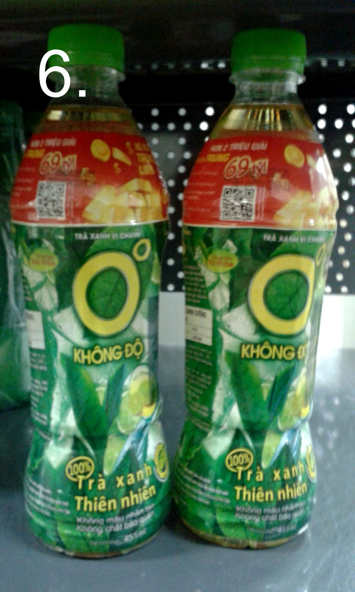
6.KHONG DO
Je balený, slazený zelený čaj. Výborný na ledě. Už jsem donutil i místního provozovatele večerky, aby je pro mě v Tamdě kupoval. Tenhle čaj prostě máte rádi, nebo ne. Říká se mu taky Zero.
(obchod BAN CA TUOI SONG)
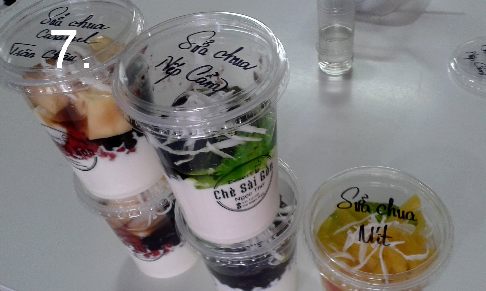
7.CHÉ
Je takový vietnamský dezert, zdravé mlsání složené z množství ingrediencí, které si sami vyberete, nebo je pro vás má připravené prodavač.Obsahuje třeba kokos, pomelo, kukuřici, tapiokové kuličky, želatinu, sladké fazole apod.
(bistro CHÉ SAI GÓN)

8.BANH BAO
Jsou takové velké knedlíky plněné houbami a masem. Nikdy nezapomenu na závist českých turistů, co si jedli své "Kuře tajemné chuti" a já jim pod nos voněl tímto. Pro přirovnání, je to taková variace knedlo-zelo bez zelí 🙂.
(bistro MINH TAM)
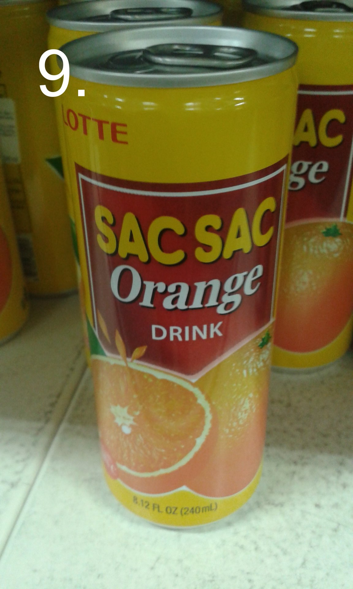
9.SAC SAC
Na tomhle pití mě baví, že obsahuje vždy ovocnou dužninu.V tomto případě se jedná o pomeranč.Často je dostupný i v pražských večerkách, paradoxně ten pomerančový nejméně.
(market TAMDA)
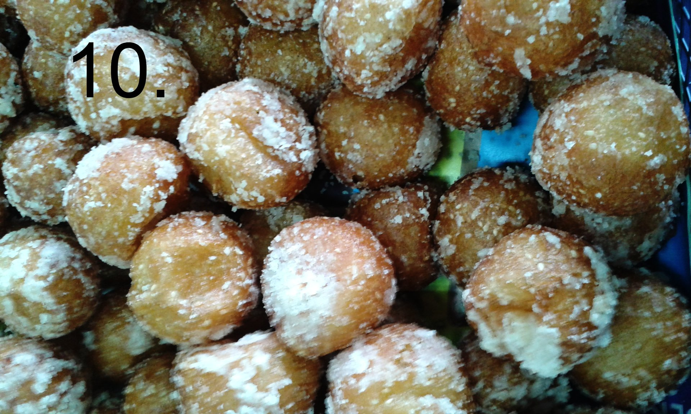
10.BÁNH RÁN
Je smažený sladký dezert ve tvaru koule plněný pastou ze sladkých mungo fazolí. Dezert může být hladký, nebo obalovaný třeba sezamem.
(bistro: BÚN CÁ Hai Phong)
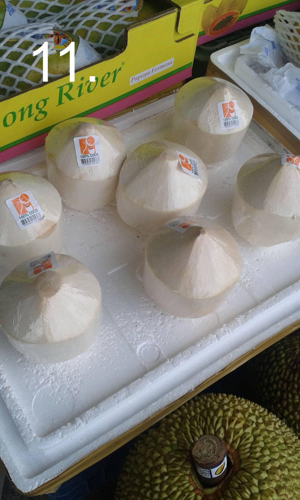
11. MLADÝ KOKOS
Tenhle ořezaný "několikahran" se navrtá a brčkem se z něj pije kokosová voda.
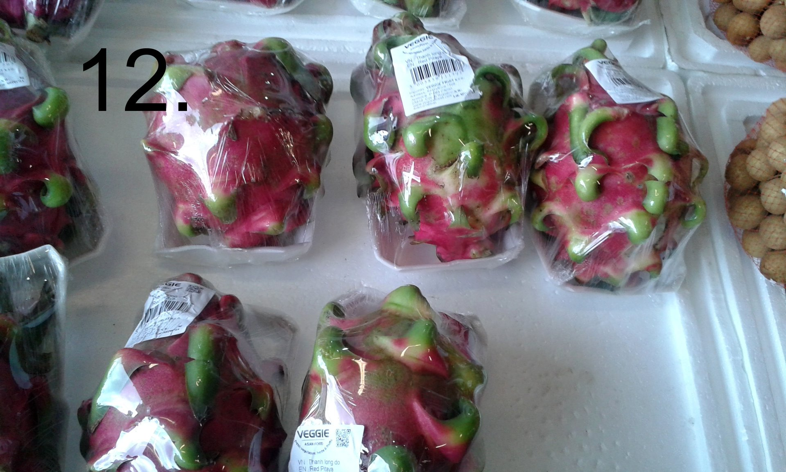
12. PITAYA - DRAČÍ OVOCE
Je exotické ovoce, které má barevnou dužninu a v ní černá semínka. Dietáři se mohou radovat, je nízkokalorické, lze z něj přidáním citrónu či limetky a minerální vody namixovat dobrý koktejl.
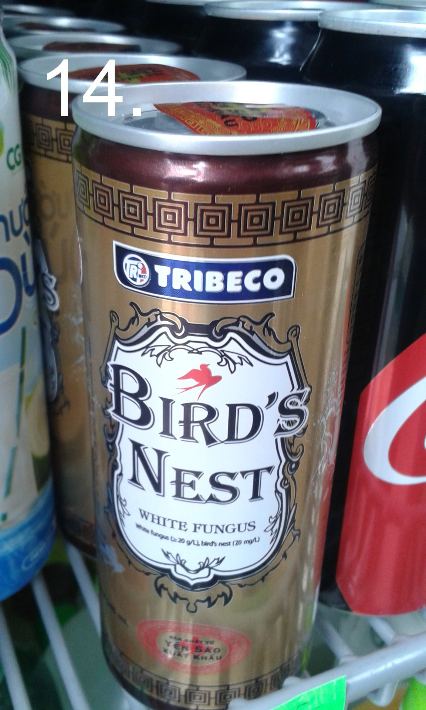
14.BIRDS NEST
Je energetická limonáda s výluhem z vlaštovčích hnízd a slin ptáků.Je plná vitamínů a podporuje mužskou potenci. Zkoušeli jsme a k pití se hecovali dlouhé minuty. Není to nejhorší a jedná se spíše o příchuť, originál je prý mnohem dražší záležitost.
(obchod THU HUONG)
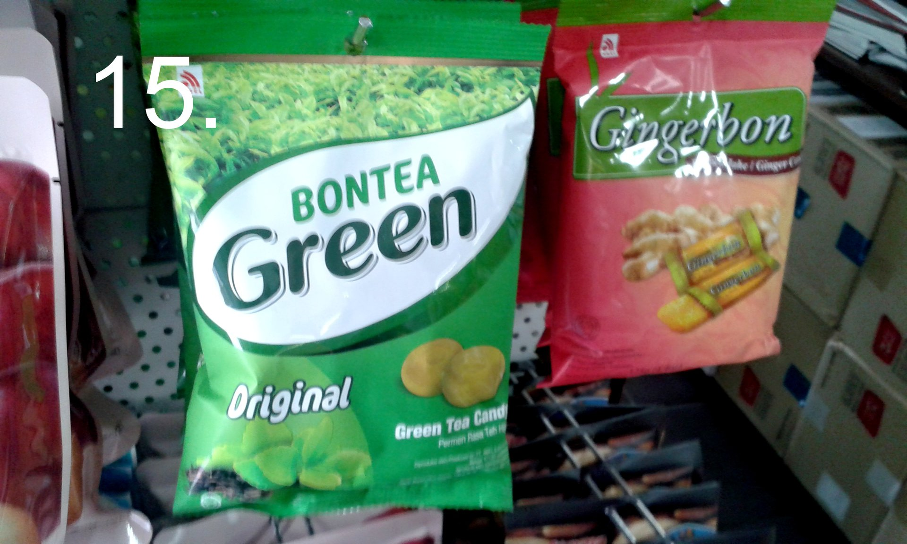
15. BONTEA GREEN
To jsou naše oblíbené bonbóny z korejského obchodu. Obsahují koncentrát ze zeleného čaje a docela na tom ujíždíme. Nyní jich už vozím vždy několik balíčků.
(obchod SIEU THIC HAN QUOC)
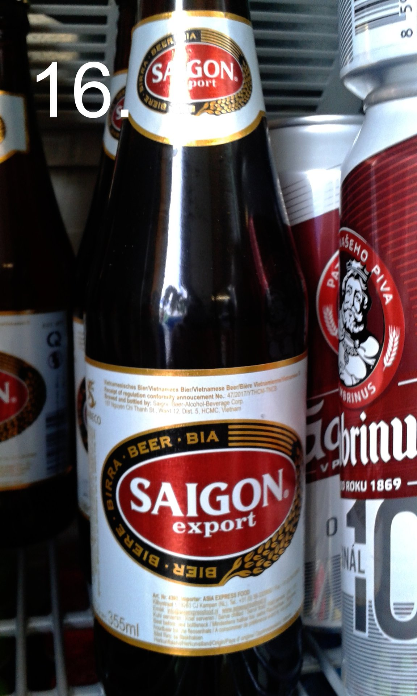
16. SAIGON Beer
Pro pivaře tu mám na ochutnávku vietnamské pivo. Jakožto abstinent vám více neporadím.
(obchod THU HUONG)
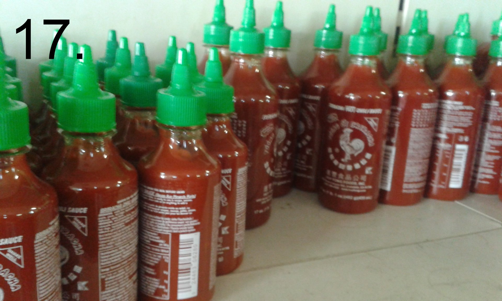
17. KOHOUT aka SRIRACHA
Je chilli omáčka, kterou najdete v Sapě snad na každém stole v restauraci a bistru. Má univerzální využití, tedy pokud holdujete pikantnějším pokrmům.
(obchod BAN CA TUOI SONG)
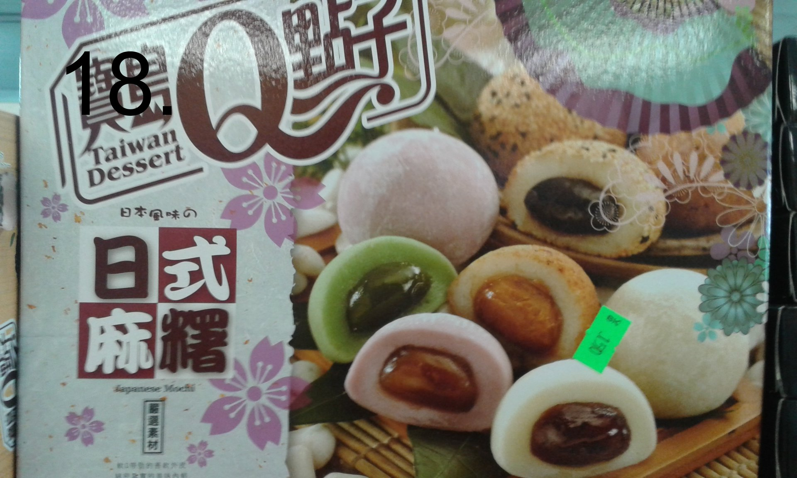
18. MOCHI
Japonské rýžové koláčky.Je mix tradičních koláčků různých příchutí.Plní se třeba úžasnou arašídovou náplní, sezamovou pastou a pastou z červených fazolí...existuje x variant.
(obchod THU HUONG)